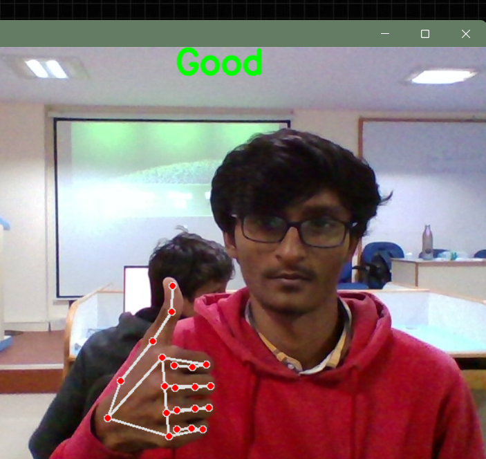
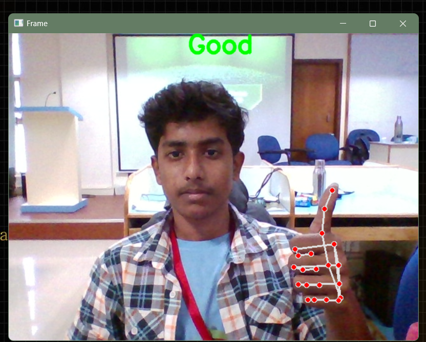
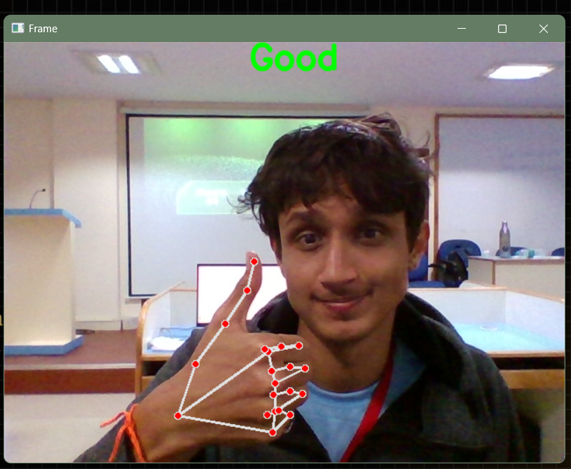

Our Team
Keerthan A K

Pramod Urs O

Sagar Anil Shigehalli

Indian Sign Language (ISL), is the main sign language used in India, by anywhere between 1 million to 2.7 million people, most of them Hearing Impaired (HI). The number of certified interpreters of ISL, however, is in the low hundreds, indicating an acute shortage as compared to the HI population.Many healthcare professionals lack proficiency Indian Sign Language (ISL), leading to miscommunication and inadequate care for deaf and hard-ofhearing patients.

Signcare uses innovative technology to provide real-time interpretation and translation services for Indian Sign Language (ISL), ensuring seamless communication for the hearing impaired.
Real-Time Translation: AI-powered technology translates spoken language into ISL for seamless communication in healthcare.
Video Interpreting: Connects users with interpreters for teleconsultations or in-person appointments.
Accessible Information: Offers ISL-translated health resources like symptom guides and medication instructions.
Personalized Assistance: Saves user medical history for efficient future consultations.
Multi-Device Compatibility: Accessible across smartphones, tablets, and computers.
Community Support: Facilitates a supportive community for the hearing impaired to share experiences.